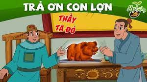

Danh sách truyện
1. Mất trộm bòMột người vừa mới tậu được con bò. Tối đi ngủ, anh ta chốt chuồng bò cẩn thận rồi lại đặt cái chỏng ngay lối ra vào mà nằm ngủ. Ấy thế mà ban đêm, kẻ trộm vẫn dắt mất bò của anh ta. Xót ruột, anh ta trình quan: -Bẩm quan, chắc là chúng nó dắt bò chui qua chõng con nằm mà đi ra. Quan nghe nói vô lý quá bật cười : -Con bò chứ có phải con chó, con mèo đâu mà chui qua gầm chõng! -Dạ, bẩm quan, thế thì chúng nó dắt bò của con chui qua lối nào ạ? Sáng dậy cái chõng con nằm vẫn để y nguyên ở chỗ cũ chắn lối ra vào kia mà ! -Đồ ngốc! Mày ngủ say, chúng nó khiêng chõng mày nằm ra một bên, dắt bò ra rồi lại khiêng về chỗ cũ... Người kia vỡ lẽ nói: -À, thế ra quan thông đồng với bọn trộm, nên mới tỏ tường được như thế chứ !
Ngày trước, dân ngụ cư là kẻ thấp kém nhất trong làng. Cho nên, đến Yên Lược, vừa dựng xong túp lều, Xiển bị bọn lý trưởng bắt ra làm mõ. Một hôm, lý trưởng thấy một chị hàng bát ngồi ỉa ở cái bãi rậm đầu làng, liền bắt lấy gánh bát rồi sai Xiển đi mời "làng" ra đình chia phần. Xiển vâng vâng dạ dạ, vác mõ đi, cứ sau một hồi mõ "cốc cốc" lại rao: - Chiềng làng chiềng chạ! lắng tai mà nge mõ rao: Cụ lý bắt được mụ hàng bát ỉa bậy đầu làng, mời "làng" mau ra đình mà chia phần! Nghe nói chia phần, bao nhiêu chứ sắc, thân hào, vội vã kéo nhau ra đình. Ðến cổng đình, gặp Xiển, ai cũng nhao nhao hỏi: - Chia phần gì thế mày? - Con mẹ hàng bát ấy đâu rồi? - Có nhiều không hả mày? Xiển lễ phép đáp: - Bẩm các cụ, con mẹ hàng bát ỉa bậy đầu làng. Dạ, nhiều lắm ạ, một đống to lù lù thế kia, có lẽ một cụ được đến vài ba bát chứ không ít đâu! Vừa nói, Xiển vừa chỉ về phía hai cái sọt bát đang để ở hè đình.
Thầy đồ thường dạy học trò đã đối thì phải đối cho chọi mới hay. Một hôm, thầy ra một vế đối: "Thần nông giáo dân nghệ ngũ cốc" (Thần nông dạy dân trồng ngũ cốc). Tất cả học trò đang ngơ ngác chưa biết đối thế nào. Thì anh học trò nọ đã gãi đầu gãi tai: - Thưa thầy, chữ "thần" con xin đối với chữ "thánh" có chọi không ạ? Thầy nói: - Ðược lắm! Anh ta lại hỏi: - Chữ "nông", con đối với "sâu", có chọi không ạ? Thầy nói: - Ðược lắm! Anh ta lại hỏi tiếp: - Chữ "giáo" đối với "gươm", "dân" đối với "vua" có chọi không ạ? Thầy gật đầu: - Ðược lắm, được lắm! Anh ta lẩm nhẩm: "Nghệ" đối với "gừng", "ngũ" đối với "tam", "cốc" đối với "cò". Cuối cùng anh ta xin đọc: - Bây giờ con xin đối ạ! "Thần nông giáo dân nghệ ngũ cốc" con xin đối là: "Thánh sâu gươm vua gừng tam cò".
Có hai anh kết nghĩa đen sách. Một anh gặp may thi đỗ, ra làm quan, liền trở mặt. Bạn đến thăm nhiều lần, lần nào cũng cho lính ra bảo, khi thì ngài giấc, ngài ngơi, khi thì ngài bận việc công không tiếp.Năm bảy phen nhứ thế, anh này giận lắm. Một hôm, anh ta mua một con lợn, quay vàng, để lên mâm bưng tới. Lính lệ vào bẩm, một lát trở ra, niềm nở mời vào. Vào đến nơi, quan chào hỏi cồn vã rồi sai lính lệ mang trầu ra mời. Anh ta cầm lấy miếng trầu, đút vào miệng con lợn, vái nó mấy vái mà rằng. - Tao trả ơn mày! Nhờ mày tao mới lại lọt vào đến cửa quan để nhìn lại mặt ban cũ!
Thấy con dâu mới cưới về được vài tháng đã xanh xao vàng vọt, bố mẹ chồng để ý theo dõi mới biết nàng dâu vì giữ lễ phép với mình, phải nhịn đánh rắm nên mới như thế. - Thì con cứ việc đánh đi tội gì mà nhịn cho nó khổ! Bố chồng bảo thế, nhưng cô dâu cho biết cái rắm của cô đánh đâu phải bình thường, mọi đồ đạc phải khuân ra hết và mọi người phải lánh xa không thì hư hại. Ông bèn bảo mọi người làm theo y lời. Và cuối cùng một tràng rắm phát ra như tiếng sấm, căn nhà nghe tiếng răng rắc như có một trận gió mạnh lướt qua. Một hồi lâu mới mở cửa, người ta còn thấy cái hũ treo ở xà nhà vì quên khuấy, mà vẫn còn lúc lắc dữ dội. Từ đó bố chồng nhìn nàng dâu bằng con mắt khác trước, nếu không muốn nói là... kính nể. Một hôm trên đường đi chợ ông thấy có toán lính chừng vài trăm người đang ra sức đẩy một chiếc thuyền rồng bị mắc cạn trên bãi lầy. Nhưng bao lần tiếng "Hò khoan" cất lên, thuyền vẫn không nhúc nhích. Sốt ruột, ông buột miệng: "Hò khoa hò uậy, không bằng rắm dậy dâu tôi!" Bị bắt về tội ngạo mạn ông đành cho biết "cái lạ" của nàng dâu. Lập tức, họ bảo ông đưa về để mời cô ra giúp kẻo chậm trễ việc quan. Thế rồi trước mũi thuyền rộng, chị con dâu chổng mông làm một tràng rắm. Chiếc thuyền lao vùn vụt xuống nước. Quan lính nhìn nhau lác mắt.